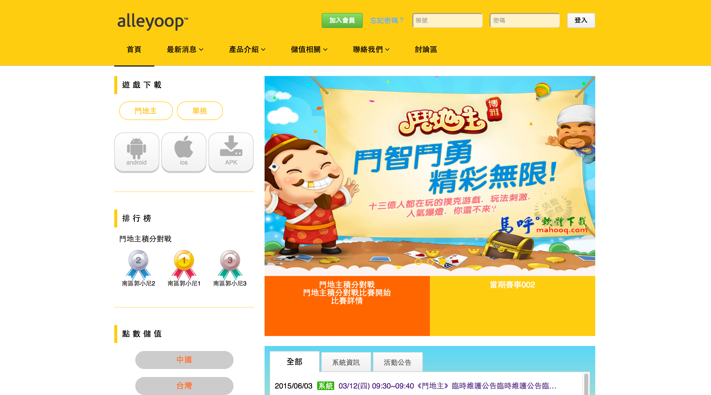
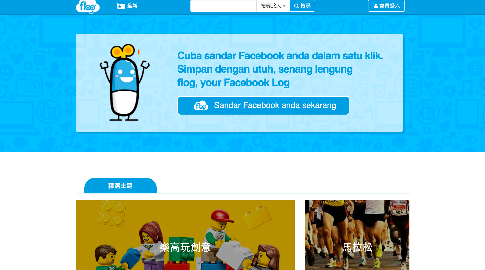

Amber Chen
Home
首頁
Web Design
網頁設計專案
Graphic Design
平面設計

#FF6600
主題：撲克遊戲手遊官方網站
需求：希望用金黃色調呈現
理念：用橘黃色調展現比較熱鬧的氣氛，搭配一些小的獎牌展現Q版的感覺。
使用：HTML、CSS
01
#CC0000
主題：保濕精華液形象活動網頁
需求：輕熟齡使用
理念：紅色調比較定調為輕熟齡化妝品的主色，搭配黑色展現沈穩氛圍。
使用：HTML、CSS、skeleton、fancybox
02
#699E2C
主題：學生工讀生招募網頁
需求：RWD、年輕感覺
理念：主畫面用一張全版工作照押上白字給人一種“新”網站的印象，用一些線條的icon搭配粉藍、粉綠、粉紅呈現年輕的感覺，刻意用格子紋背景呼應學生實習生的主題。
使用：HTML、CSS、jQuery、skeleton
03

#00A0E0
主題：臉書備份網站
需求：全站改版成RWD、優化UI、設計新頁面
理念：希望除了備份功能之外，還可以有一些提供資訊的功能，搭配主題公仔走可愛風。
使用：HTML、CSS、scss、compass、jQuery、Bootstrap、slick、awesone-font
04
#D72825
主題：比價網站
需求：RWD、紅色為主、要有首頁、搜尋、比價頁、選單、收藏功能、篩選功能
理念：web版選單部分參考amazon的樣式，其他部份以Bootstrap為基礎做改良，商品呈現部分有參考agoda配色， 互動部分：錨點定位、選單偵測滑動方向顯示/隱藏、goTop按鈕出現的條件與動態。
使用：HTML、CSS、scss、compass、jQuery、Bootstrap、slick、awesone-font、nouislider
05